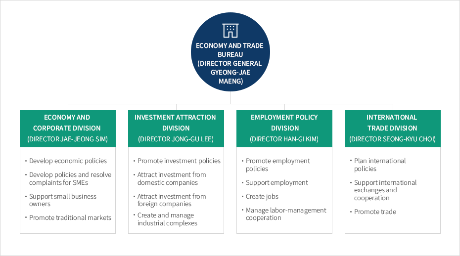

Organization
- Home
- About Chungbuk
- Organization
Organization of Economy and Trade Bureau


Economy and Trade Bureau(Director General Gyeong-jae Maeng)
-
Economy and Corporate Division (Director Jae-jeong Sim)
- Develop economic policies
- Develop policies and resolve complaints for SMEs
- Support small business owners
- Promote traditional markets
-
Investment Attraction Division (Director Jong-gu Lee)
- Promote investment policies
- Attract investment from domestic companies
- Attract investment from foreign companies
- Create and manage industrial complexes
-
Employment Policy Division (Director Han-gi Kim)
- Promote employment policies
- Support employment
- Create jobs
- Manage labor-management cooperation
-
International Trade Division (Director Seong-kyu Choi)
- Plan international policies
- Support international exchanges and cooperation
- Promote trade